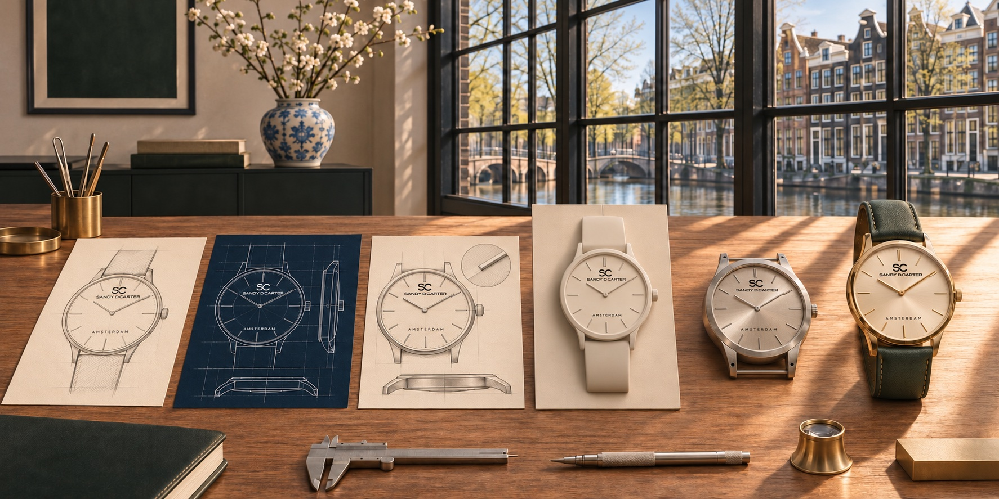

Journal · Design process
From Watch Sketch
to Finished Product
A transparent look at the decisions between an idea and a production-ready timepiece.
TIME REFINED
A watch does not move directly from an attractive sketch to production. The path involves research, geometry, prototypes, engineering constraints, supplier validation and repeated testing. Each stage should make the original idea clearer and more realistic.
1. Define the intent
The process begins with the wearer, context and point of view. Is the aim visual restraint, strong architectural character or everyday versatility? A clear brief helps later decisions remain connected instead of becoming a collection of unrelated details.
2. Establish the architecture
Case, dial, hands, markers, crown and strap are developed as one system. Early drawings test hierarchy and proportion before surface decoration. Designers consider the dial opening, bezel weight, hand length, marker spacing, case profile and the transition from lugs to strap.
3. Translate design into technical constraints
A movement, case construction and manufacturing method introduce real dimensions and tolerances. Components must fit together, remain legible and support the required function. This stage may change a sketch substantially without abandoning its core idea.
4. Prototype and refine
Physical or high-fidelity prototypes reveal scale, comfort, reflections, finishing transitions and assembly issues that a flat drawing cannot show. Review in different lighting and on different wrists helps identify where the design feels too heavy, too quiet or visually unbalanced.
5. Validate materials and colour
Metal finishing, coating, dial texture, printing and strap colour should be evaluated on real samples. Screen colours are not a reliable substitute. Material choices also need appropriate care, durability and compliance information.
6. Confirm the production specification
The approved sample and technical documents should agree on dimensions, movement, materials, water resistance, origin and quality-control requirements. Marketing language must follow the verified product rather than an earlier concept.
7. Publish verified facts
A final product page should represent the production model accurately with authentic photography, specifications and policies. SANDY D. CARTER remains at the pre-launch stage; current imagery communicates creative direction and is not presented as final product inventory.
